모델을 쓰고, 실행하고, 결과를 들여다보고, 다시 고칩니다. 이 설명서는 그 순환에 쓰이는 모든 기능의 사용법을 담았습니다.
FEAN은 여러 주체 사이의 계약, 이전, 통지, 선택을 적는 형식언어입니다. 모델 하나는 구성원과 자산, 상태를 담는 셀, 상태를 바꾸는 사건, 사건이 일어나는 순서를 적은 프로그램, 그리고 그 모델에 대해 묻는 질의로 이루어집니다. 언어의 정의는 docs/financial-language.md에, 엔진의 구조는 docs/engine.md에 있습니다.
FEAN IDE는 이 언어를 위한 작업 환경입니다. 창은 크게 두 부분입니다.
거꾸로 물을 수도 있습니다. 값을 정하지 않은 채 둔 상수(unknown)나 프로그램의 한 지점에서의 상태를 두고, 목표가 성립하려면 그것이 어떤 값이어야 하는지를 묻습니다(solve). 엔진의 솔버가 값을 하나씩 넣어 보는 대신 결과가 달라지는 경계를 찾아 답합니다. 이 쓰임새는 6장에 있습니다.
결과는 보기만 하고 고치지는 않습니다. 결과의 요소를 누르면 편집기가 그것을 쓴 줄로 가고, 거기서 고친 뒤 다시 실행합니다. 편집 → 실행 → 열람 → 편집의 순환이 이 도구의 쓰임새입니다.
Rust(1.95 이상)가 있으면 아래 한 줄로 실행 파일 두 개가 dist/에 생깁니다. 처음에는 화면 라이브러리까지 컴파일하므로 몇 분 걸립니다.
bash rust/build.sh| 파일 | 하는 일 |
|---|---|
dist/fean-ide | IDE. 이 설명서의 대상입니다. |
dist/fean | 명령줄 엔진. 컴파일, 실행, 이미지 목록, 검사를 창 없이 합니다(8장). |
빌드의 중간 산출물은 ~/Library/Caches/fean-rust-target에 둡니다. 다른 곳을 쓰려면 CARGO_TARGET_DIR를 지정합니다.
dist/fean-ide # 예제 Repay80 으로 시작
dist/fean-ide examples/repay80.fean # 파일을 열고 시작파일을 주지 않으면 명세의 예제 Repay80이 열립니다. 저장하기 전까지 이 글은 ‘이름 없음.fean’입니다.
always는 {early=false: false, early=true: false}입니다. 모든 이력에서 빚이 다 갚아지지는 않는다는 뜻입니다.always 카드의 반례 이력 보기를 누르면 ‘시점별 구조와 재생’으로 넘어가 그 이력이 펼쳐집니다. ◀ ▶로 한 걸음씩 움직이며 어느 걸음에서 무엇이 바뀌는지 봅니다.init I = 100을 init I = 60으로 바꿉니다. 결과 위에 ‘결과 낡음’이 뜹니다. 다시 실행하면 ‘모순’ 탭의 수가 늘어납니다. 줄 돈이 모자라 award가 막히기 때문입니다.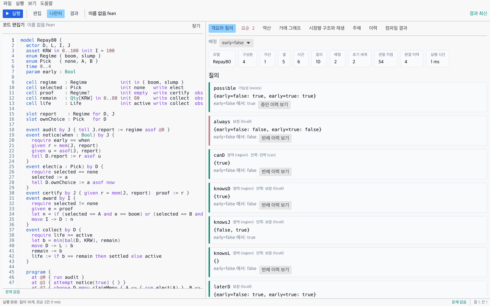
| 자리 | 내용 |
|---|---|
| 메뉴 막대 | 파일(새 파일, 열기, 예제 열기, 저장, 다른 이름으로 저장), 실행(실행, 탐색 한도), 보기(배치, 결과 보기 고르기, 어두운 화면, 글자 크기), 도움말(기능 목록, 단축키) |
| 도구 막대 | ▶ 실행 단추, 배치 고르기(편집 · 나란히 · 결과), 파일 이름, 오른쪽 끝의 결과 상태 |
| 가운데 | 코드 편집기와 결과 보기. 배치에 따라 하나만 또는 둘 다 보입니다. |
| 상태 줄 | 방금 한 일의 알림, 검사 결과(문제 없음 / 문제 n건), 커서의 줄과 칸 |
도구 막대의 세 단추나 ⌘1 ⌘2 ⌘3으로 바꿉니다.
| 배치 | 보이는 것 | 쓸 때 |
|---|---|---|
| 편집 ⌘1 | 코드 편집기만 | 긴 글을 쓸 때 |
| 나란히 ⌘2 | 편집기와 결과 | 고치고 실행하며 오갈 때. 가운데 경계선을 끌어 너비를 바꿉니다. |
| 결과 ⌘3 | 결과 보기만 | 그래프나 시간표를 넓게 볼 때 |
결과만 보는 배치에서 ‘코드로 이동’을 누르면 편집기가 보이도록 나란히 배치로 바뀝니다.
| 표시 | 뜻 |
|---|---|
| 결과 없음 | 아직 실행하지 않았습니다. |
| 실행 중… | 컴파일하고 실행하는 중입니다. 그동안에도 편집할 수 있습니다. |
| 결과 최신 | 보이는 결과가 지금 글의 결과입니다. |
| 결과 낡음 | 실행한 뒤에 글이 바뀌었거나, 지금 글이 컴파일되지 않습니다(4.3). |
보기 › 어두운 화면을 켜면 어두운 바탕으로 바뀝니다. 글자 크기는 보기 › 글자 크게 / 글자 작게 또는 ⌘+ ⌘−로 10에서 24까지 조절합니다. 편집기와 결과의 글자가 함께 바뀝니다.
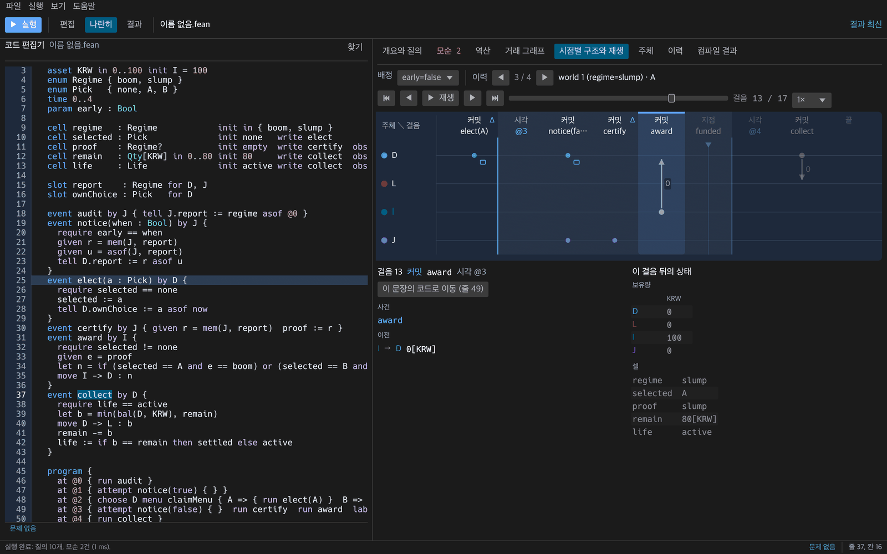
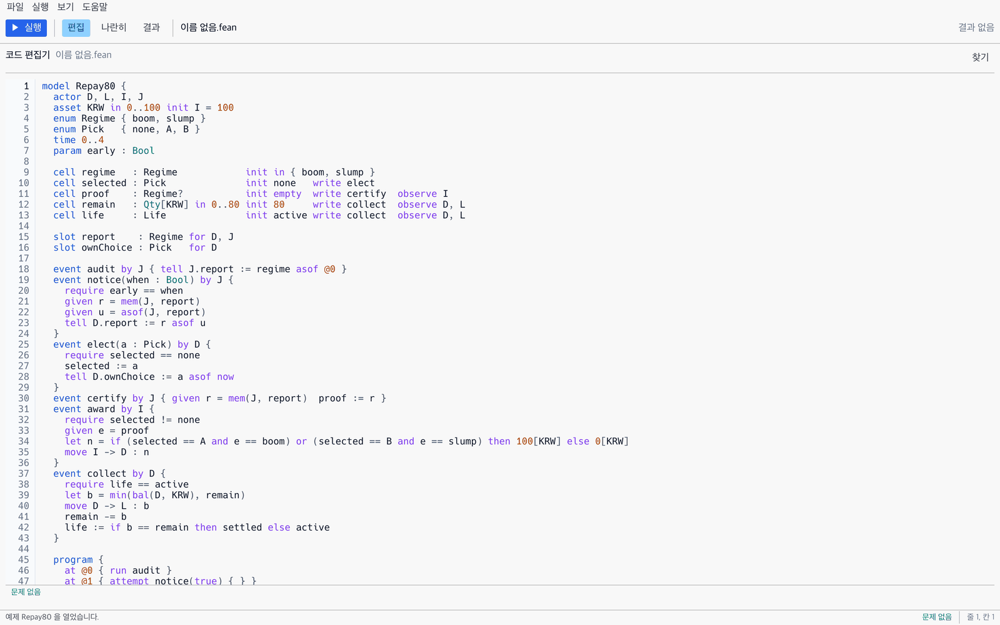
| 기능 | 하는 법 | 설명 |
|---|---|---|
| 새 파일 | 파일 › 새 파일, ⌘N | 구성원 둘이 한 번 지급하는 작은 본보기 모델로 시작합니다. |
| 파일 열기 | 파일 › 열기, ⌘O | .fean 글을 고릅니다. UTF-8 글이어야 합니다. 명령줄에서 fean-ide FILE로도 엽니다. |
| 저장 | 파일 › 저장, ⌘S | 이름이 없는 글이면 저장할 자리를 묻습니다. |
| 다른 이름으로 저장 | 파일 › 다른 이름으로 저장, ⇧⌘S | 새 파일에 쓰고, 그 뒤로는 그 파일을 편집합니다. |
저장하지 않은 변경이 있으면 도구 막대의 파일 이름 옆에 ●가 붙습니다. 이 상태에서 새 파일, 열기, 예제 열기, 창 닫기를 하면 저장할지 먼저 묻습니다(저장 · 저장 안 함 · 취소). 읽거나 쓰지 못하면 까닭이 상태 줄에 나옵니다.
다른 글을 열면 이전 글의 결과는 지워집니다. 결과는 언제나 지금 편집기에 있는 글에 대한 것입니다.
파일 › 예제 열기에 명세의 모델 열 개가 들어 있습니다. 실행 파일 안에 들어 있어서 어디서 실행하든 열립니다. 같은 글이 examples/에도 있습니다.
| 예제 | 보여 주는 것 |
|---|---|
Order | 한 번의 선택과 운. 가장 작은 선택 메뉴 |
MutualDebt | 서로 진 빚: 총액 결제는 막히고 순액 결제는 됩니다. |
Support | 지원 조건의 순환과 결제 불능(NO_SETTLEMENT) |
LoanLifecycle | 대출의 일생. 표준 계약 Loan의 사례 |
CallExample | 콜 옵션. 표준 계약 Call, 자산 두 가지 |
Repay80 | 통지 시점, 선택, 상환. 공개 매개변수 early |
Straddle | 매개변수의 영역(region). 배정 201개 |
Workout | 선호(prefer)와 확률 가중, 발행 |
Capital | 역산. 미지수 cap과 역산 질의의 네 꼴(6장) |
Escrow | 역산. 한 지점에서의 상태 구하기, 해가 없는 질의(6장) |
글은 종류별로 색이 다릅니다.
| 종류 | 예 | 색(밝은 화면) |
|---|---|---|
| 선언을 여는 낱말 | model actor asset cell event program query | 파랑 |
| 그 밖의 예약어 | init write observe require move tell run at if | 보라 |
| 타입 | Bool Time Actor Num Qty | 청록 |
| 수와 시각 | 100, @3 | 주황 |
| 주석 | // 설명 | 회색 기울임 |
| 기대값 주석 | // => true | 초록 |
왼쪽 여백에 줄 번호가 있습니다. 글을 옆으로 넘겨도 줄 번호는 제자리에 있습니다. 커서가 있는 줄의 번호는 진하게, 문제가 있는 줄의 번호는 빨갛게 보이고 빨간 점이 붙습니다. 점에 마우스를 올리면 문제의 내용이 뜹니다.
입력을 멈추고 0.3초가 지나면 엔진의 앞단(구문 분석, 전개, 타입과 구조 검사)이 글을 검사합니다. 실행하지 않아도 됩니다. 문제가 있으면 세 곳에 나타납니다.
[규칙 이름] 줄 n과 설명. 누르면 그 줄로 갑니다.엔진은 첫 문제에서 멈추므로 한 번에 하나씩 나옵니다. 고치면 다음 문제가 나옵니다. 규칙 이름은 명세의 규칙 이름과 같습니다(부록).
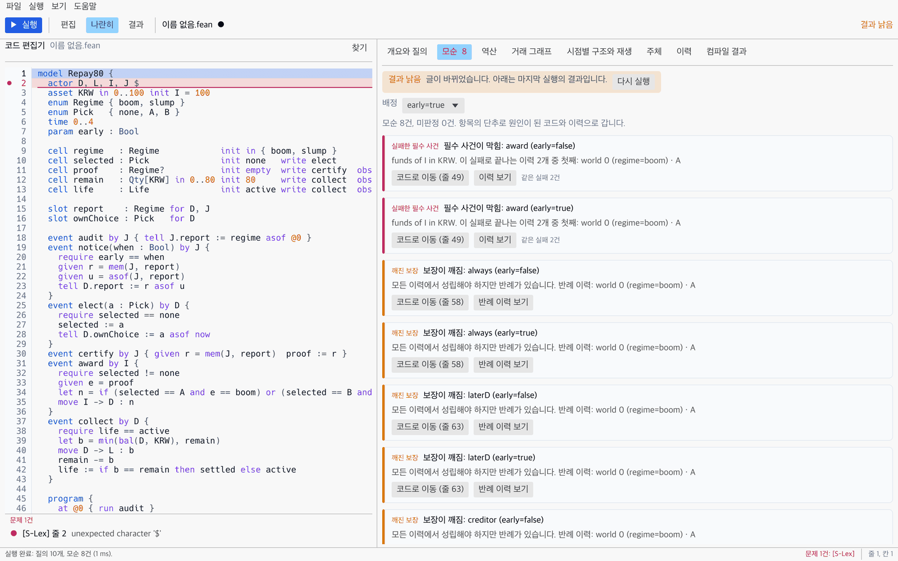
$가 있어 [S-Lex]가 뜹니다. 오른쪽의 결과는 고치기 전 실행의 것이라 ‘결과 낡음’입니다.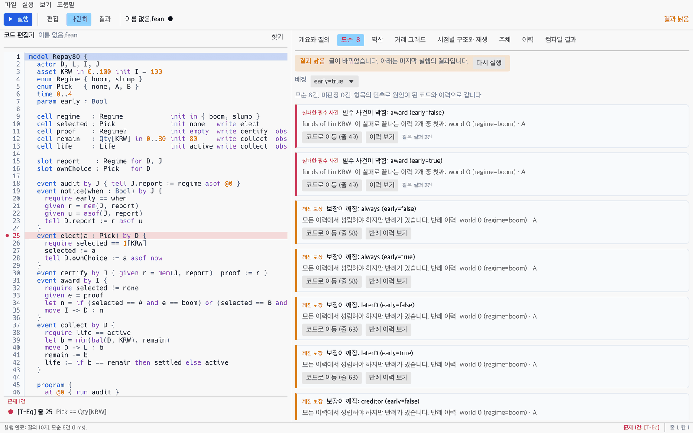
selected == 1[KRW]는 열거값과 금액을 비교하므로 [T-Eq]입니다. 오류는 그 사건을 선언한 줄(25)에 표시됩니다.⌘F 또는 편집기 머리의 찾기를 누르면 찾기 줄이 열립니다. 찾을 글을 넣으면 맞는 곳이 모두 노랗게 표시되고 몇 곳인지 나옵니다. Enter나 다음으로 다음 곳, ⇧Enter나 이전으로 이전 곳을 고릅니다. Esc나 닫기로 닫습니다. 대소문자를 구별합니다.
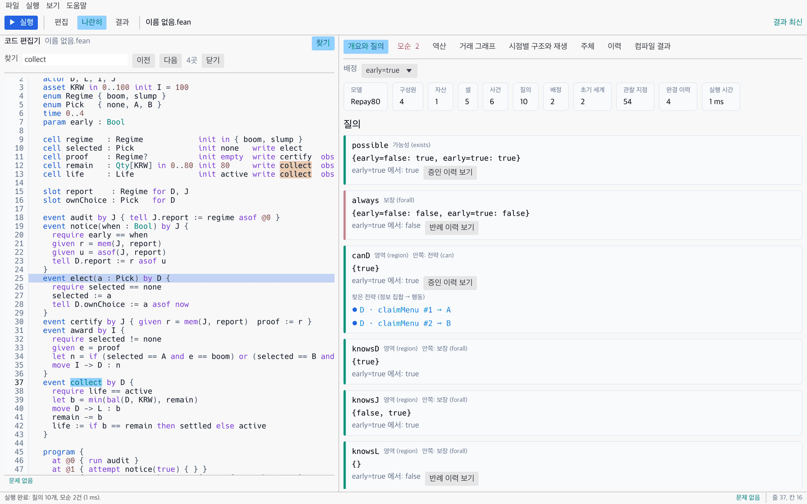
collect가 네 곳에 있습니다.| 키 | 하는 일 |
|---|---|
| ⌘Z · ⇧⌘Z | 실행 취소와 다시 실행 |
| ⌘C ⌘X ⌘V ⌘A | 복사, 잘라내기, 붙여넣기, 모두 선택 |
| Tab | 탭 문자를 넣습니다(다음 칸으로 옮겨 가지 않습니다). |
| 두 번 누르기 · 세 번 누르기 | 낱말 선택 · 줄 선택 |
새 파일은 아래 글로 시작합니다. 선언의 순서는 자유입니다. 문법 전체는 명세 1장에 있습니다.
model Untitled {
actor A, B // 구성원
asset KRW in 0..100 init A = 100 // 자산과 초기 보유량
time 0..1 // 공개 시각의 범위
event pay by A { move A -> B : 30[KRW] } // 사건: A가 B에게 30을 보낸다
program {
at @1 { run pay } // 시각 1에 pay 를 반드시 실행
}
query paid = forall run: at(end, bal(B, KRW) == 30[KRW]) // 모든 이력의 끝에서 성립하는가
}값을 정하지 않고 둘 상수는 unknown으로, 그 값을 묻는 질의는 solve로 선언합니다. 쓰는 법은 6장에 있습니다.
▶ 실행, ⌘R, F5, 또는 실행 › 실행. 저장하지 않은 글도 그대로 실행됩니다. 실행은 다음 차례로 일어납니다.
param)의 값 조합 하나가 배정입니다. 배정마다 초기 세계를 모두 만들고 프로그램을 끝까지 따라가 가능한 이력을 빠짐없이 펼칩니다.solve가 있으면 솔버가 풀고, 그 해와 해가 아닌 값에서 모델을 실행해 사례로 둡니다(6장).실행은 따로 도는 작업이라 그동안 창은 멈추지 않습니다. 끝나면 상태 줄에 ‘실행 완료: 질의 n개, 모순 m건 (t ms)’가 나옵니다. 역산 질의가 있으면 그 수도 함께 적힙니다.
실행 › 탐색 한도는 배정 하나에서 만들 관찰 지점(이력의 한 걸음)의 최대 수입니다. 기본값은 200,000입니다. 한도를 넘은 배정은 판정하지 않고, 그 배정의 질의는 UNKNOWN, 영역 질의에서는 unknown {…}로 따로 적힙니다. ‘모순’ 보기에는 ‘미판정’으로 실립니다. 틀린 답을 내는 대신 모른다고 하는 것입니다. 한도를 올리거나 모델의 가지 수를 줄이면 판정됩니다.
결과는 실행한 때의 글에 대한 것입니다. 그 뒤로 글이 달라지면 결과가 지금 글과 맞지 않을 수 있으므로 IDE가 표시합니다.
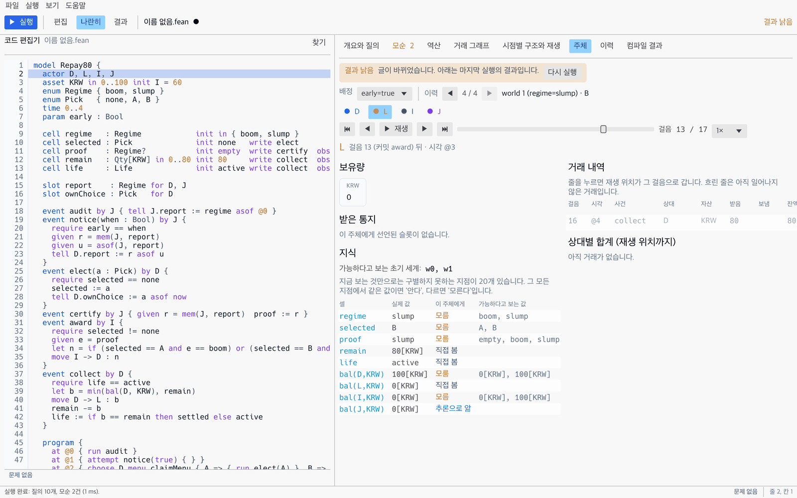
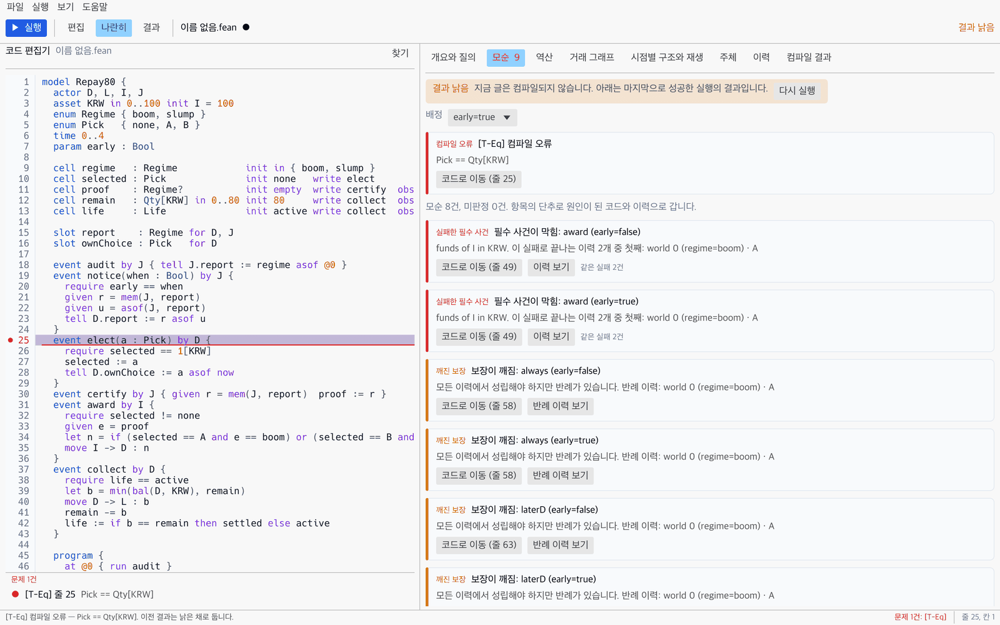
다시 실행해도 보고 있던 것을 그대로 봅니다. IDE는 고른 것을 번호가 아니라 이름으로 기억했다가 새 결과에서 다시 찾습니다.
| 고른 것 | 다시 찾는 기준 |
|---|---|
| 사례 | 이름표(예: early=true, need의 해 · cap=80)가 같은 사례 |
| 주체 | 이름이 같은 구성원 |
| 이력 | 초기 세계의 번호와, 그 이력이 지나온 가지와 선택이 같은 이력. 꼭 같은 것이 없으면 앞부분이 가장 길게 같은 이력 |
| 재생 위치 | 같은 걸음 번호(이력이 짧아졌으면 마지막 걸음) |
| 보기와 배치 | 그대로 |
예제 Repay80에서 init I = 100을 init I = 60으로 바꾸고 실행하면, canD가 {true}에서 {}로 바뀌고 모순이 2건에서 8건으로 늘어납니다. 보험자 I가 100을 줄 수 없어 필수 사건 award가 막히고, 그 뒤의 보장들이 함께 깨집니다. 이렇게 한 군데를 바꾸고 무엇이 달라지는지 보는 것이 기본 작업입니다.
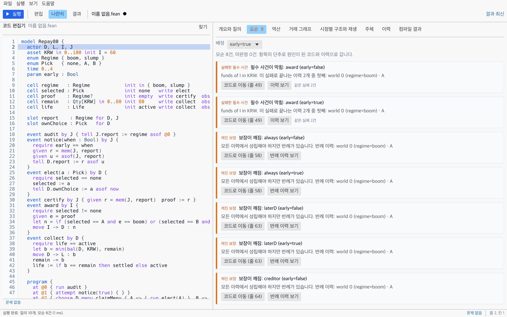
award와 그 때문에 깨진 보장들이 차례로 나옵니다.결과 맨 위의 탭으로 보기를 고릅니다. 보기 메뉴에서도 고를 수 있습니다. 탭 아래에는 모든 보기가 함께 쓰는 고르기가 있습니다.
| 고르기 | 설명 |
|---|---|
| 사례 선택 | 사례는 값이 모두 정해진 모델 하나의 실행입니다. 공개 매개변수가 있으면 값 조합(배정)마다 하나, 역산 질의가 있으면 그 해와 해가 아닌 값마다 하나입니다(6장). 목록에서 고릅니다. 실행되지 않은 사례에는 (오류)나 (미판정)이 붙습니다. 사례가 하나뿐이고 매개변수가 없으면 ‘매개변수 없음’입니다. 역산 질의가 없는 모델에서는 이 칸의 이름이 ‘배정’입니다. |
| 이력 | 거래 그래프, 시점별 구조와 재생, 주체 보기는 완결 이력 하나를 보여 줍니다. ◀ ▶로 넘깁니다. 옆에 그 이력의 초기 세계와 선택이 적혀 있고, 실패로 끝난 이력은 빨갛게 보입니다. |
| 재생 위치 | 이력의 몇 번째 걸음까지 보는지입니다. 세 보기가 같은 위치를 함께 씁니다. 그래프에서 위치를 옮기면 주체 보기도 그 시점이 됩니다. |
| 주체 | 이름표를 눌러 고릅니다. 그래프의 원이나 시간표의 줄 이름을 눌러도 됩니다. |
alt, choose, free가 있으면 이력이 갈립니다. 엔진은 갈리는 이력을 모두 따라갑니다.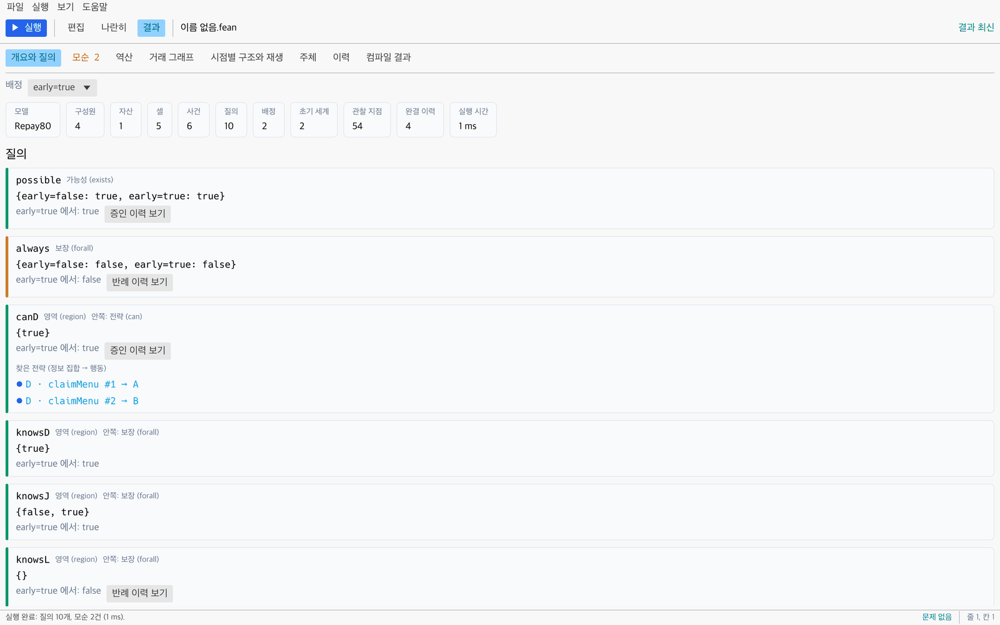
맨 위 칸들은 모델의 규모입니다. 모델 이름, 구성원·자산·셀·사건·질의·사례(배정)의 수, 고른 사례의 초기 세계·관찰 지점·완결 이력의 수, 실행에 걸린 시간입니다. 미지수와 역산 질의가 있으면 그 수도 나옵니다.
질의 카드에는 이름, 종류, 결과가 있습니다. 이름을 누르면 그 질의의 줄로 갑니다. 결과의 글은 명세 5.3의 표기입니다.
| 질의 | 결과의 꼴 | 뜻 |
|---|---|---|
가능성 exists run: φ | true / false | φ가 성립하는 이력이 하나라도 있는가 |
보장 forall run: φ | true / false | 모든 이력에서 φ가 성립하는가 |
전략 can {C}: φ | true / false | C가 자기 선택만으로 φ를 보장할 수 있는가 |
수치 max run: e 등 | 100[KRW], 1/2 | 이력에 걸친 최댓값·최솟값·기댓값 |
영역 region p: … | {0..90, 110..200}, {true} | 안쪽 질의가 참인 매개변수 값들 |
선호 prefer … | true / false | 어느 정보 집합에서나 한 행동이 다른 행동보다 나은가 |
매개변수가 있으면 결과가 {early=false: true, early=true: true}처럼 배정별 표가 되고, 그 아래에 고른 배정에서의 답이 한 줄 더 나옵니다. 카드 왼쪽의 색 막대는 고른 배정에서의 상태입니다. 초록은 문제 없음, 주황은 보장(forall, can)이 거짓, 회색은 미판정, 빨강은 실행 오류입니다.
답에는 근거가 붙습니다. 단추를 누르면 그 이력이 ‘시점별 구조와 재생’에 펼쳐집니다.
| 단추 | 나오는 때 | 가는 곳 |
|---|---|---|
| 증인 이력 보기 | exists가 참, can이 참 | 식이 성립하는 이력. can이면 찾은 전략을 따르는 이력 |
| 반례 이력 보기 | forall이 거짓, can이 거짓 | 식이 깨지는 이력 |
| 이 값을 내는 이력 보기 | 가중치 없는 수치 질의 | 그 최댓값이나 최솟값을 내는 이력 |
can이 참이거나 max policy가 붙은 수치 질의에는 ‘찾은 전략 (정보 집합 → 행동)’이 나옵니다. 한 줄이 정보 집합 하나입니다. 정보 집합은 그 주체가 서로 구별하지 못하는 선택 지점들의 묶음이고, 전략은 묶음마다 행동 하나를 정하는 일입니다. 같은 메뉴가 #1, #2로 나뉘어 있으면 그 주체가 두 경우를 구별한다는 뜻입니다. 줄을 누르면 그 지점의 ‘주체’ 보기로 가서, 그때 그 주체가 무엇을 알았는지 볼 수 있습니다.
맨 아래 ‘배정’ 표(역산 질의가 있으면 ‘사례’ 표)에는 사례마다 상태(실행됨, 미판정, 오류)와 규모가 있습니다. 보기를 누르면 그 사례로 바뀝니다. 미지수가 있는 모델의 질의 카드에는 역산 질의마다의 답이 {need: true, short: false}처럼 적히고, 그 아래에 지금 고른 사례에서의 답이 따로 나옵니다.
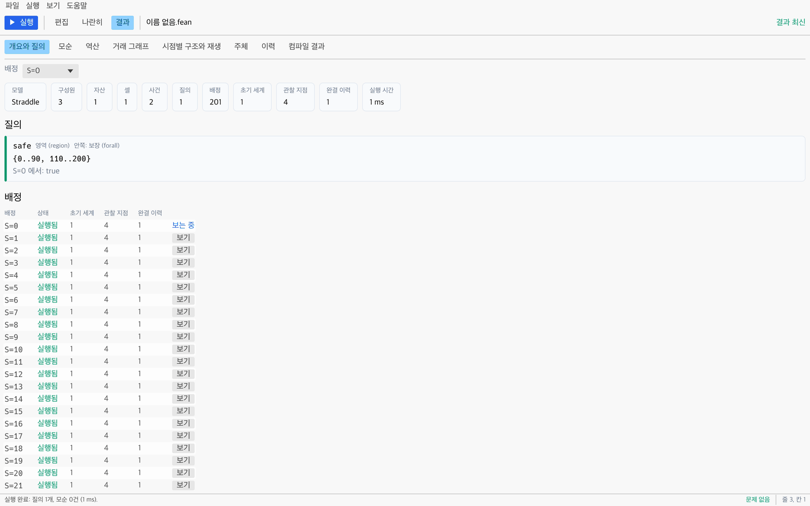
Straddle. 영역 질의의 결과 {0..90, 110..200}과, 매개변수 S의 값마다 하나씩인 배정 201개의 표입니다.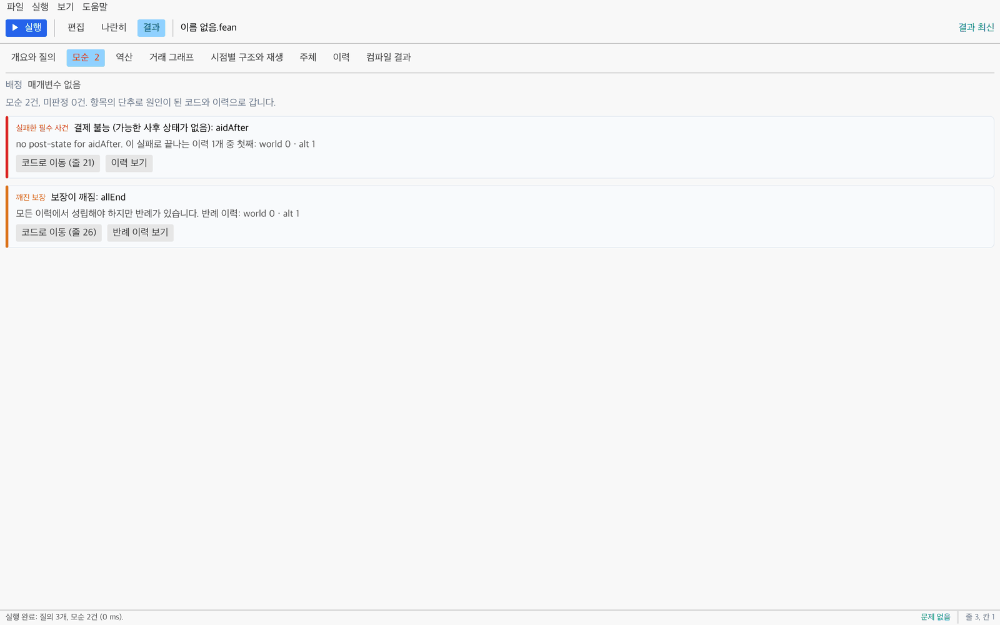
Support의 모순. 결제 불능으로 실패한 필수 사건과, 그 때문에 깨진 보장이 있습니다.모델이 스스로와 어긋나는 곳을 모읍니다. 탭 이름 옆의 빨간 수가 건수입니다.
| 종류 | 무엇인가 | 색 |
|---|---|---|
| 컴파일 오류 | 글이 구문이나 규칙을 어깁니다. 규칙 이름과 줄이 나옵니다. | 빨강 |
| 실행 오류 | 컴파일은 되지만 실행 중에 모델이 무효로 드러납니다(D-Init, D-Move, D-Weight, W-Range, W-Clock 등). 어느 배정인지 나옵니다. | 빨강 |
| 실패한 필수 사건 | run으로 반드시 일어나야 하는 사건이 막히거나(BLOCKED) 가능한 사후 상태가 없습니다(NO_SETTLEMENT). 같은 사건·사유의 실패는 하나로 묶고 건수를 적습니다. | 빨강 |
| 깨진 보장 | forall이나 can 질의가 거짓입니다. 반례 이력이 붙습니다. | 주황 |
| 해 없음 | 역산 질의에 해가 하나도 없습니다. 목표가 성립하지 않는 값의 예가 붙고, 해가 아닌 값 보기로 그 값에서의 이력을 봅니다(6.6). | 주황 |
| 미판정 | 탐색 한도를 넘어 판정하지 못했습니다. 역산 질의를 끝까지 풀지 못한 경우도 여기에 실립니다. 모순은 아닙니다. | 회색 |
항목마다 단추가 있습니다. 코드로 이동 (줄 n)은 원인이 된 문장이나 질의의 줄로, 이력 보기 · 반례 이력 보기는 그 이력의 그 걸음으로 갑니다. 모순이 없으면 ‘모순이 없습니다’가 초록으로 나옵니다.
exists가 거짓인 것은 모순으로 치지 않습니다. 가능성이 없다는 답일 뿐입니다. 영역 질의 안의 forall도 치지 않습니다. 어디서 성립하는지를 묻는 질의이기 때문입니다. 역산의 사례(해, 해가 아닌 값)에서 실패한 사건이나 깨진 보장도 치지 않습니다. 그것들은 찾아낸 후보이지 모델의 주장이 아닙니다.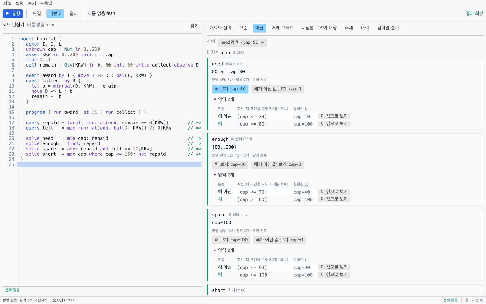
Capital). 역산 질의마다 카드가 하나씩 있고, 답과 영역의 표가 들어 있습니다.미지수(unknown)와 역산 질의(solve)의 결과입니다. 맨 위에 미지수와 그 범위가, 그 아래에 역산 질의마다 카드가 있습니다. 카드에는 질의의 꼴과 답, 솔버가 모델을 실행한 횟수, 판정이 같은 영역의 표가 있고, 해 보기와 해가 아닌 값 보기로 그 값에서 실행한 모델을 사례로 고릅니다. 역산 질의가 없는 모델에서는 쓰는 법의 안내가 나옵니다. 읽는 법과 쓰임새는 6장에 모았습니다.
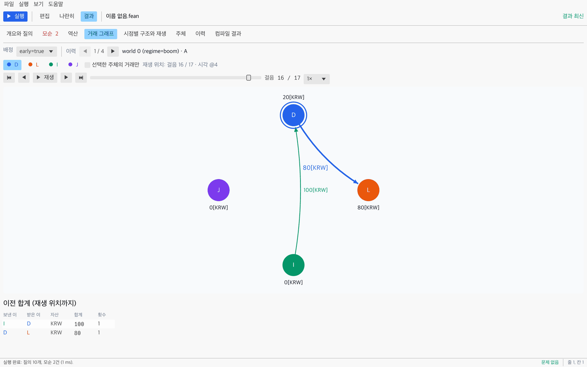
구성원이 원, 이전이 화살표입니다. 같은 두 주체 사이의 같은 자산 이전은 하나로 합쳐 합계를 적고, 여러 번이면 ×횟수를 붙입니다.
+=, -=로 보유량을 만들거나 없앤 것은 원 옆의 짧은 화살표와 ‘발행’ · ‘소각’으로 나옵니다.아래 ‘이전 합계’ 표에 같은 내용이 글로 있습니다(보낸 이, 받은 이, 자산, 합계, 횟수). 이전이 하나도 없으면 ‘이 위치까지 이전이 없습니다’가 나옵니다.
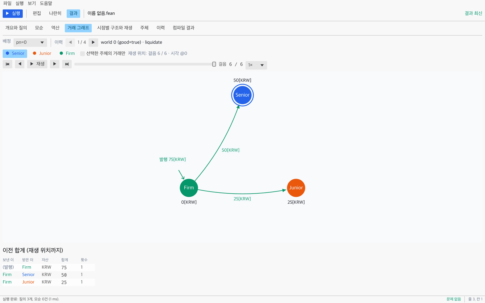
Workout. Firm에게 75가 발행되고, 그것이 Senior와 Junior에게 나뉩니다.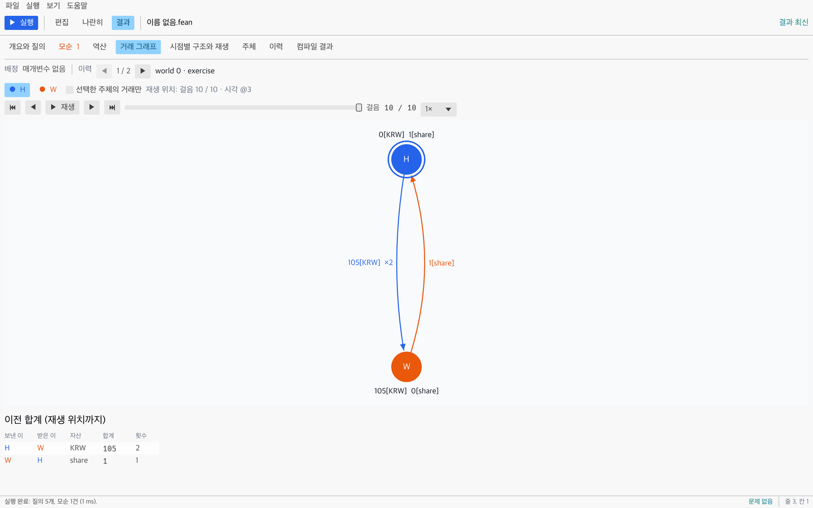
CallExample. 자산이 두 가지(KRW, share)라 같은 두 주체 사이에 화살표가 여럿입니다.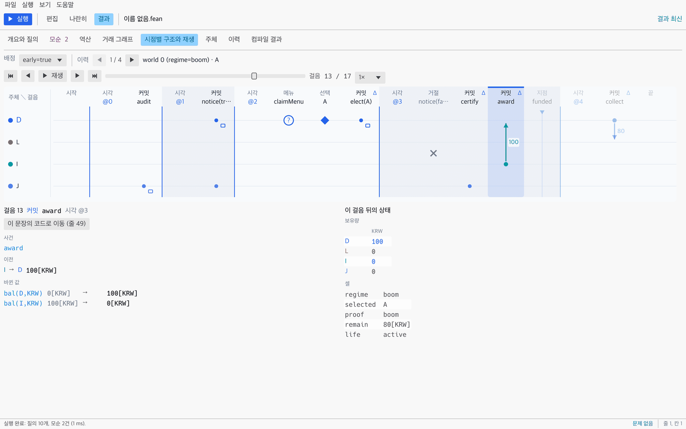
award)에 서 있습니다.이력 하나를 시간표로 펼칩니다. 가로로 한 칸이 한 걸음이고, 주체마다 줄이 하나씩 있습니다. 공개 시각이 바뀌는 곳에 세로선이 있고, 시각이 홀수인 구간은 바탕이 옅게 칠해져 있습니다. 파란 띠가 지금 재생 위치이고, 그보다 뒤의 걸음은 흐리게 보입니다.
| 걸음 | 무엇인가 | 그림 |
|---|---|---|
| 시작 | 초기 세계 | (표시 없음) |
| 시각 | at @t: 공개 시각이 바뀜 | 세로선과 @t |
| 커밋 | 사건(또는 묶음)이 성립함 | 이전은 보낸 이의 줄에서 받은 이의 줄로 가는 화살표와 금액. 이전 없이 낀 주체는 점, 통지를 받은 주체는 작은 네모, 발행·소각은 +n · −n. 값이 바뀌었으면 머리에 Δ |
| 거절 | attempt한 사건이 막힘. 상태는 그대로이고 else 가지로 감 | 회색 ✕ |
| 실패 | 필수 사건이 실패함. 이력이 여기서 끝남 | 빨간 ✕와 빨간 바탕 |
| 가지 | alt의 한 가지 | 머리에 alt n |
| 메뉴 | choose: 주체에게 메뉴를 보임 | 그 주체의 줄에 ?가 든 원 |
| 선택 | 주체가 행동을 고름 | 그 주체의 줄에 마름모 |
| 지점 | label로 이름 붙인 곳 | 머리 아래 작은 세모와 가는 세로선 |
| 끝 | 프로그램이 끝까지 실행됨 | (표시 없음) |
칸을 누르면 재생 위치가 그 걸음으로 갑니다. 줄 이름을 누르면 그 주체가 선택됩니다. 걸음이 많으면 옆으로 넘기며, 주체 이름은 왼쪽에 붙어 있습니다. 재생 위치가 화면 밖으로 나가면 시간표가 따라갑니다.
| 조작 | 하는 일 |
|---|---|
| ⏮ · ⏭ | 처음 · 끝으로 |
| ◀ · ▶ (← · →) | 한 걸음 뒤로 · 앞으로 |
| ▶ 재생 / ⏸ 멈춤 (Space) | 한 걸음씩 저절로 넘어갑니다. 끝에 닿으면 멈추고, 끝에서 누르면 처음부터 다시 갑니다. |
| 위치 막대 | 끌어서 아무 걸음으로 |
| 속도 | 0.5×, 1×, 2×, 4×. 1×는 한 걸음에 0.8초입니다. |
화살표 키와 Space는 글 칸에 커서가 없을 때 듣습니다. 편집기를 쓰다가 왔다면 결과의 빈 곳을 한 번 누르면 됩니다.
시간표 아래 왼쪽은 지금 걸음의 상세입니다. 걸음의 종류와 이름, 시각, 그리고 그 걸음이 한 일이 있습니다.
tell로 주체의 슬롯에 들어간 값과 기준 시각, forget으로 잊은 슬롯오른쪽은 ‘이 걸음 뒤의 상태’입니다. 보유량 표(주체 × 자산)와 셀의 값이 있고, 이 걸음에서 바뀐 값은 파랗고 굵게 보입니다.
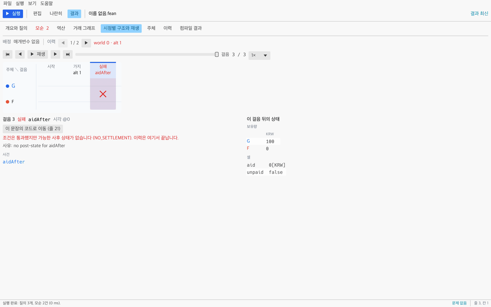
Support). 조건은 통과했지만 두 ensure를 함께 만족하는 사후 상태가 없어 NO_SETTLEMENT입니다.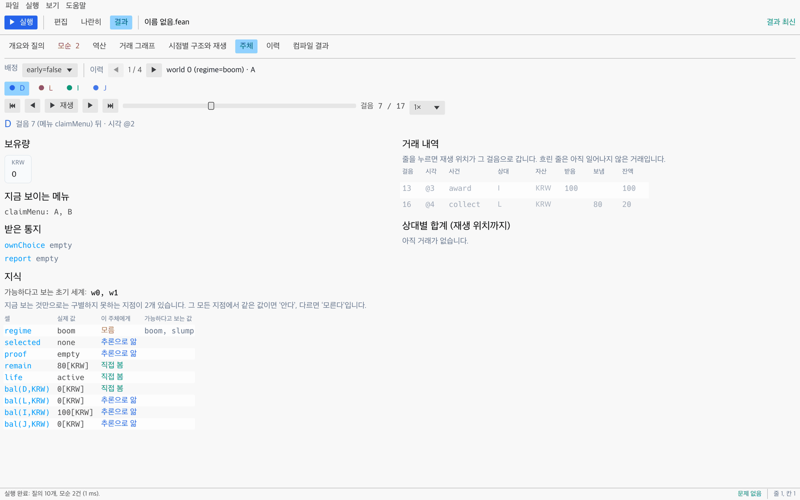
early=false에서 D가 메뉴를 받은 순간입니다. D는 regime이 boom인지 slump인지 모릅니다.한 주체의 자리에서 본 상태입니다. 위의 이름표로 주체를 고르고, 재생 조작으로 시점을 고릅니다. 왼쪽이 상태와 지식, 오른쪽이 거래 내역입니다.
| 칸 | 내용 |
|---|---|
| 보유량 | 자산마다 그 시점의 보유량 |
| 지금 보이는 메뉴 | 이 걸음에서 이 주체에게 메뉴가 떴다면 메뉴 이름과 고를 수 있는 행동 |
| 받은 통지 | 이 주체의 슬롯마다 들어 있는 값, 기준 시각(asof), 받은 시각(recv). 비어 있으면 empty. 슬롯 이름을 누르면 선언한 줄로 갑니다. |
주체는 공개 시각, 자기에게 뜬 메뉴, 자기 슬롯, 자기가 관찰하는 셀(자기 보유량 포함)만 봅니다. 이것이 같은 지점들은 그 주체에게 구별되지 않습니다. IDE는 지금 지점과 구별되지 않는 지점을 모두 모아 다음을 보여 줍니다.
w0, w1이면 어느 세계인지 모르는 것입니다.| 표시 | 뜻 |
|---|---|
| 직접 봄 | observe로 관찰하는 셀이거나 자기 보유량 |
| 추론으로 앎 | 보지는 못하지만 구별되지 않는 모든 지점에서 값이 같음 |
| 모름 | 구별되지 않는 지점들에서 값이 다름. 오른쪽에 가능한 값들이 나옵니다. |
이것은 질의의 K(i, φ)와 같은 판정입니다. 그림 18에서 D에게 regime이 ‘모름’이므로 K(D, regime == boom)은 거짓이고, 그래서 knowsD의 영역에 early=false가 들지 않습니다.
오른쪽 표는 그 주체가 낀 이전을 차례로 적은 원장입니다. 열은 걸음, 시각, 사건, 상대, 자산, 받음, 보냄, 잔액입니다. 잔액은 그 줄까지의 그 자산 보유량이고, 이력의 처음 보유량에서 시작합니다. 발행과 소각은 상대가 ‘(발행)’ · ‘(소각)’입니다.
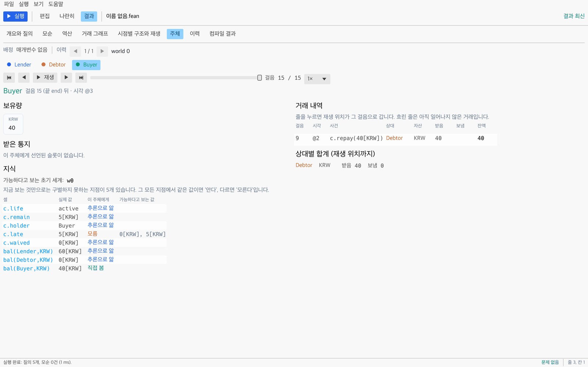
LoanLifecycle에서 Buyer의 주체 보기. 양도받은 뒤에 들어온 상환이 거래 내역에 있습니다.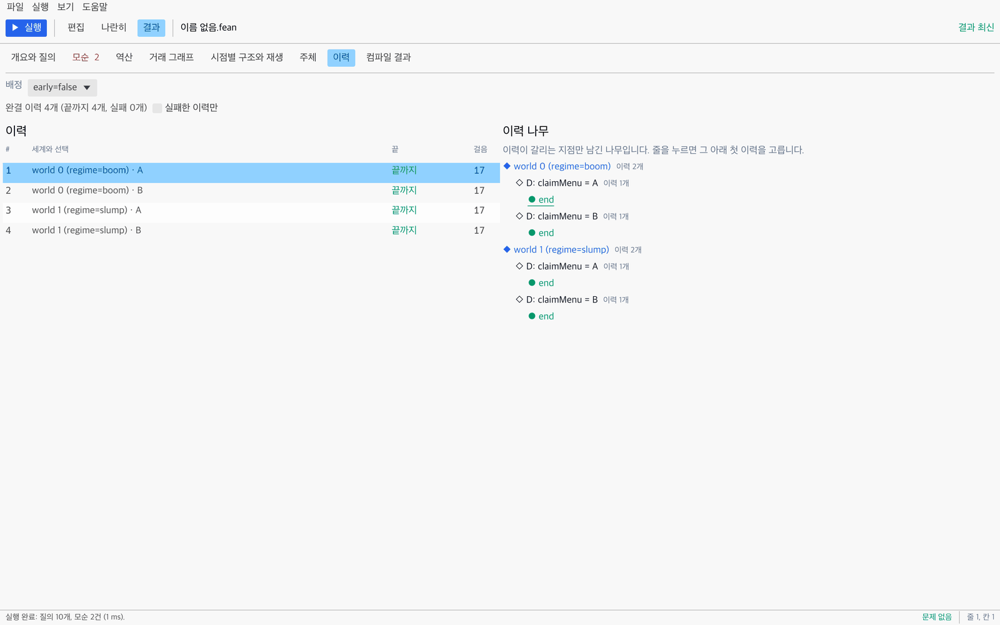
고른 배정의 완결 이력 전체입니다. 맨 위에 수가 있습니다(끝까지 간 것, 실패한 것).
alt의 가지나 사후 상태가 여럿인 커밋, ●는 끝, ✖는 실패입니다. 갈림마다 그 아래 이력의 수가 적혀 있습니다. 줄을 누르면 그 아래 첫 이력이 선택됩니다. 지금 고른 이력의 끝에는 밑줄이 있습니다.세계의 이름표에는 세계마다 다른 초기값이 적힙니다(예: world 1 (regime=slump)). 이력이 수천 개여도 표와 나무는 보이는 줄만 그리므로 느려지지 않습니다.
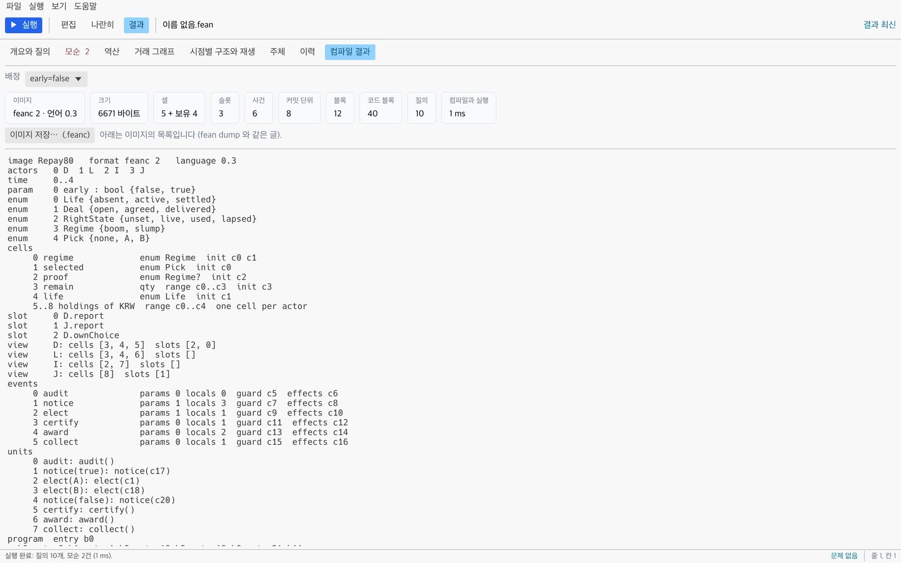
컴파일러가 만든 이미지를 보여 줍니다. 위 칸들은 형식과 언어 판, 이미지의 크기(바이트), 셀·슬롯·사건·커밋 단위·블록·코드 블록·질의의 수, 컴파일과 실행에 걸린 시간입니다.
fean run 파일.feanc로 실행하고 fean dump 파일.feanc로 목록을 봅니다. Python 엔진(python3 -m fean)도 같은 파일을 읽습니다.docs/engine.md 3~5장에 있습니다. 글을 선택해 복사할 수 있습니다.질의는 값이 모두 정해진 모델에서 목표가 성립하는지를 답합니다. 역산은 거꾸로 묻습니다. 목표가 성립하려면 무엇이 어떤 값이어야 하는가. 물을 수 있는 것은 두 가지입니다. 값을 정하지 않고 둔 상수(초기 자금, 금액, 시각 같은 계약 조건)와, 프로그램의 한 지점에서의 상태입니다. 언어의 정의는 명세 5.4에 있습니다.
미지수는 값을 정하지 않은 상수입니다. param이 쓰이는 자리면 어디에나 쓸 수 있습니다. 수는 범위를 적고, 참·거짓, 열거형, 시각, 구성원은 범위를 적지 않습니다.
unknown cap : Num in 0..200 // 0부터 200까지의 수
unknown mode : Mode // 열거형 Mode 의 값 가운데 하나
unknown when : Time // 선언된 시각 가운데 하나역산 질의는 solve 이름 = 꼴 [at(지점)] [where 제약] : 목표입니다. 목표는 참·거짓 식이고, 선언해 둔 질의의 이름을 그 답으로 씁니다. where는 실행하기 전에 후보를 거르는 제약입니다. 실행하기 전이라 질의의 이름은 쓸 수 없습니다.
| 꼴 | 묻는 것 | 결과의 꼴 |
|---|---|---|
find | 해 전체 | {80..200}. 좌표가 여럿이면 조건의 묶음 {[cap >= fee + 20]} |
any | 해 하나(가장 작은 것) | cap=100, 없으면 none |
min 식 · max 식 | 목표를 지키면서 식을 가장 작게·크게 하는 해 | 80 at cap=80, 없으면 none |
예제 Capital의 역산 질의 넷입니다. 발행자의 초기 자금 cap이 얼마여야 80원 상환이 보장되는지를 묻습니다.
query repaid = forall run: at(end, remain == 0[KRW])
query left = max run: at(end, bal(D, KRW)) ?? 0[KRW]
solve need = min cap: repaid // => 80 at cap=80 가장 적은 자금
solve enough = find: repaid // => {80..200} 되는 자금 전부
solve spare = any: repaid and left >= 20[KRW] // => cap=100 갚고도 20원이 남는 자금 하나
solve short = max cap where cap <= 150: not repaid // => 79 at cap=79 150 이하에서 못 갚는 가장 큰 자금repaid의 결과 {need: true, enough: true, spare: true, short: false}는 “need의 해에서는 참, short의 해에서는 거짓”이라는 뜻입니다. 대표 해는 any·min·max가 낸 해, find는 가장 작은 해입니다. 해가 없으면 none입니다.실행한 뒤 역산 탭을 엽니다(그림은 5.3에 있습니다). 카드 하나가 역산 질의 하나입니다.
| 자리 | 내용 |
|---|---|
| 미지수 | 맨 위 줄. 미지수의 이름과 범위입니다. 이름을 누르면 그 unknown 선언으로 갑니다. |
| 이름과 꼴 | 역산 질의의 이름, 꼴, 지점이 있으면 그 이름. 이름을 누르면 그 solve 선언으로, 지점을 누르면 그 label로 갑니다. |
| 답 | 굵은 글. 명령줄 fean run이 내는 것과 같은 글입니다. |
| 모델 실행 n번 · 영역 m개 | 솔버가 답을 내려고 모델을 실행한 횟수와, 판정이 같은 영역의 수입니다. 뒤에 ‘판정 완료’, ‘일부 미판정’, ‘풀지 못함’ 가운데 하나가 붙습니다. ‘일부 미판정’은 한도 안에서 다 가리지 못한 것입니다(6.7). |
| 해 보기 · 해가 아닌 값 보기 | 그 값에서 실행한 모델을 사례로 고르는 단추입니다(6.3). 단추에 그 값이 적혀 있습니다. |
| 영역의 표 | ‘영역 m개’를 누르면 펼쳐집니다. 영역이 12개 이하이면 처음부터 펼쳐져 있고, 200개까지 보입니다. 한 줄이 영역 하나이고, 판정, 그 영역을 정하는 조건, 솔버가 그 영역에서 실제로 실행한 값이 있습니다. |
공개 매개변수가 있는 모델은 배정마다 따로 풉니다. 그때는 카드 안에 배정마다 줄이 하나씩 있고, 줄 머리에 그 배정과 그 배정에서의 답이 적힙니다.
영역의 판정은 다섯 가지입니다.
| 판정 | 뜻 |
|---|---|
| 해 | 이 영역의 모든 값에서 목표가 성립합니다. |
| 해 아님 | 목표가 성립하지 않습니다. |
| 후보 아님 | where의 제약, 불변식 또는 범위 밖이라 처음부터 후보가 아닙니다. |
| 무효 | 이 값에서는 모델이 유효하지 않습니다(범위를 벗어난 초기값, 거꾸로 가는 시각, 음수 이전 등). 해가 아닙니다. 판정에 마우스를 올리면 규칙 이름이 나옵니다. |
| 미판정 | 한도 안에서 가리지 못했습니다. |
조건은 [cap >= 80], [cap=80..150], [paid=true, due >= bal(B, KRW) + 1]처럼 적습니다. 대괄호 안의 조건을 모두 지키는 값이 그 영역입니다. 좌표 하나의 값이나 범위, 좌표들 사이의 비교가 나오고, 나눗셈의 몫은 floor(x / 2)나 ceil(x / 2)로 적힙니다. 선언된 범위나 다른 조건이 이미 말해 주는 것은 적지 않습니다.
답의 글만으로는 왜 그 값인지 알 수 없습니다. 카드의 해 보기는 대표 해에서, 해가 아닌 값 보기는 목표가 성립하지 않는 가장 작은 값에서 모델을 실행한 결과를 사례로 고릅니다. 이것이 해와 반례 보기입니다. 고른 뒤에는 결과 머리의 사례 칸이 그 이름표(short의 해 · cap=79)로 바뀌고, 다른 일곱 보기가 모두 그 사례를 보여 줍니다. 거래 그래프에서 돈이 어디까지 갔는지, 재생에서 어느 걸음에서 모자랐는지를 그대로 봅니다.
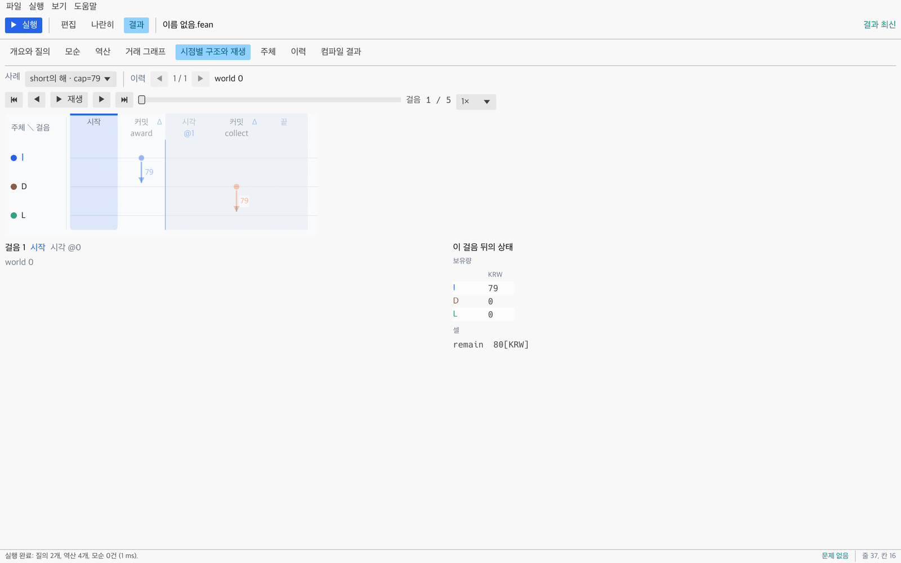
short의 해 cap=79를 사례로 고른 뒤의 ‘시점별 구조와 재생’. 79원으로는 80원을 다 갚지 못합니다.사례는 결과 머리의 사례 선택 목록에서도 고를 수 있습니다. 미지수가 있는 모델의 사례는 역산 질의의 해와 해가 아닌 값뿐입니다. 미지수에 값이 없으면 실행할 것이 없기 때문입니다. 역산 질의가 없거나, 어느 역산 질의에서도 해와 해가 아닌 값이 나오지 않으면 사례 칸에 ‘값이 정해지지 않음’이 나옵니다.
영역의 표의 줄마다 이 값으로 보기가 있습니다. 누르면 솔버가 그 영역에서 실행한 값(표의 ‘실행한 값’)에서 모델을 실행해 사례로 엽니다. 예제 Capital의 need 카드에서 [cap >= 80] 줄의 단추를 누르면 사례 need의 고른 값 · cap=100이 열립니다. 이 값으로 보기로 연 사례는 한 번에 하나이고, 다른 값을 열면 앞의 것을 대신합니다. 해와 반례의 사례는 그대로 남습니다. 지금 보고 있는 값의 줄에는 단추 대신 ‘보는 중’이 나오고, 후보가 아닌 영역에는 단추가 없습니다. 역산의 사례를 고른 동안에는 보기 맨 아래에 ‘지금 고른 사례’와 재생 보기, 거래 그래프 보기, 이력 보기가 나옵니다.
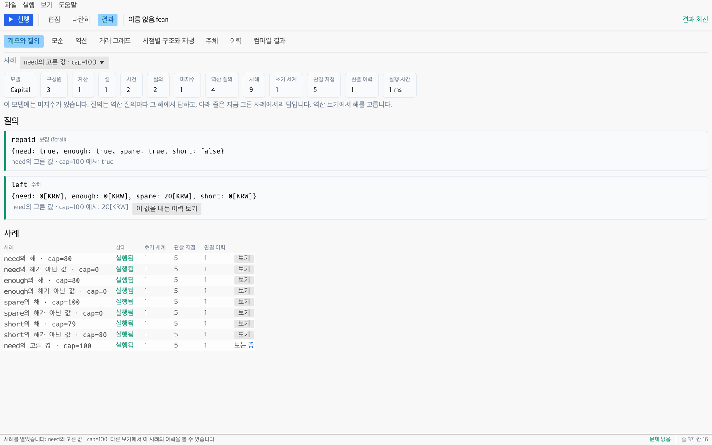
cap=100을 사례로 연 뒤의 ‘개요와 질의’. 질의 카드의 첫 줄은 역산 질의마다의 답, 둘째 줄은 지금 사례에서의 답입니다. 100원이면 다 갚고 20원이 남습니다.at(지점)을 붙이면 후보가 미지수의 값이 아니라 그 지점에서의 상태가 됩니다. 상태는 시계 now, 모든 셀, 모든 보유량, 모든 슬롯입니다. 솔버는 그 지점 뒤에 남은 프로그램을 그 상태에서 실행해 목표를 봅니다. 그 상태에 실제로 도달하는지는 따지지 않습니다. “여기서부터 일이 되려면 어떤 상태여야 하는가”를 묻는 것입니다. 지점은 프로그램에 한 번만 적힌 label이어야 합니다.
program { label ready at @1 { attempt pay { } } }
query settled = forall run: at(end, paid)
solve pre = find at(ready): settled
solve cheap = min bal(B, KRW) at(ready) where due == 2[KRW] and not paid: settled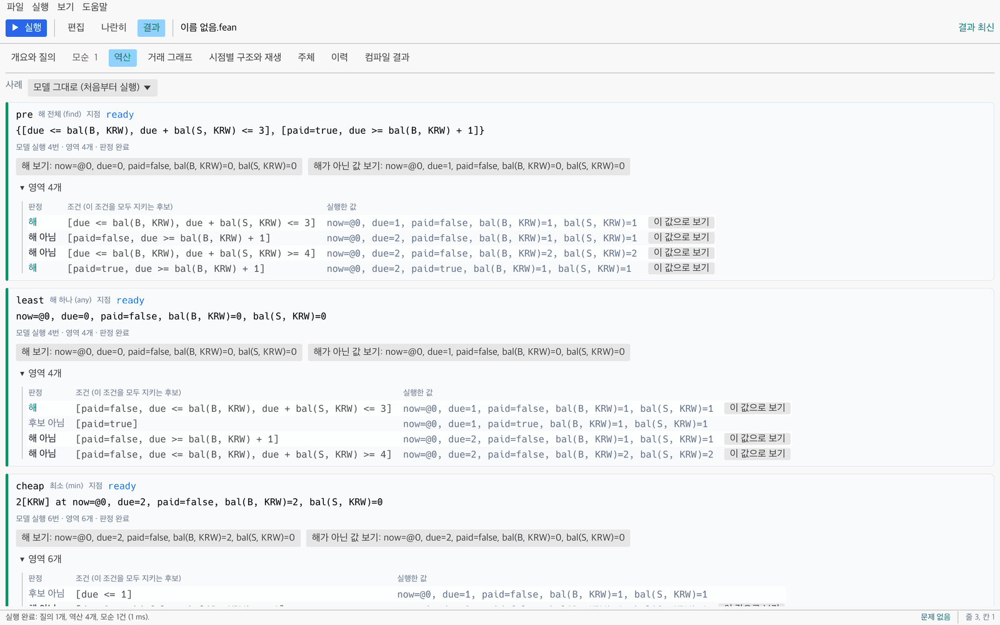
Escrow의 역산 보기. pre의 해는 두 묶음입니다. 대금을 치를 수 있고 받는 쪽에 자리가 있는 상태, 그리고 이미 치렀고 다시 치를 돈이 없는 상태입니다.now, 셀의 이름, bal(구성원, 자산), 그리고 기억 슬롯마다 mem(구성원, 슬롯)·asof(구성원, 슬롯)·recv(구성원, 슬롯)입니다. 비어 있는 셀과 슬롯은 empty로 적습니다.min·max의 식에는 그 지점의 셀과 보유량을 직접 쓸 수 있습니다(min bal(B, KRW) at(ready)). where도 그 상태에서 평가합니다.ready 에서 시작’으로 시작합니다. 그 앞의 프로그램은 실행하지 않습니다.해가 하나도 없는 역산 질의는 답이 none(find는 {})이고 ‘모순’ 보기에 ‘해 없음’으로 실립니다. 제약과 목표가 함께 성립할 수 없다는 뜻이므로, 모델이나 요구 가운데 하나를 바꿔야 합니다. 항목의 해가 아닌 값 보기는 목표가 성립하지 않는 값에서의 이력으로, 역산 보기는 그 질의의 영역으로 갑니다.
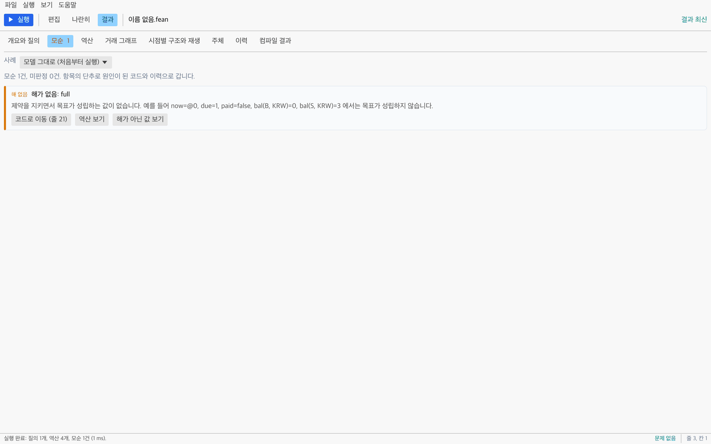
Escrow의 모순. 받는 쪽의 보유량이 한도에 닿아 있는 상태에서는 결제가 보장되는 경우가 없습니다.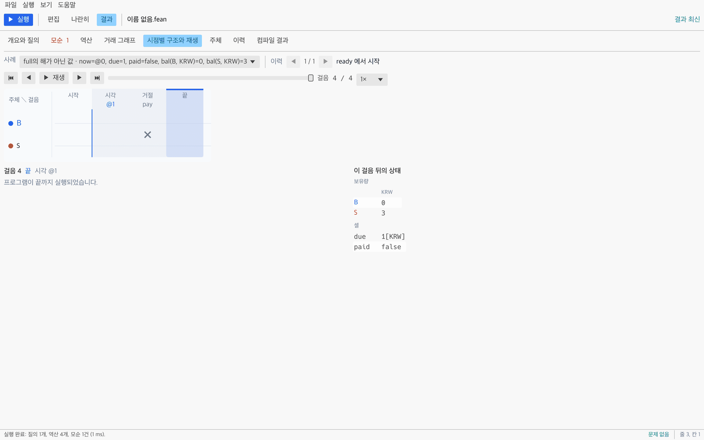
ready에서 시작해 pay가 거절되고 끝났습니다.솔버의 답은 값을 하나씩 모두 넣어 본 것과 같습니다. 방법만 다릅니다. 솔버는 한 값에서 모델을 실행하면서 미지수에 달린 판정(비교, 범위와 재원의 검사, 누가 무엇을 구별하는지)을 기록하고, 그 판정들이 그대로인 영역 전체에 같은 답을 줍니다. 그런 다음 판정을 하나씩 뒤집은 영역으로 넘어갑니다. 그래서 범위가 0..1,000,000,000이어도 실행 횟수는 범위가 아니라 결과가 갈리는 경우의 수에 달려 있습니다.
| 상황 | 일어나는 일 |
|---|---|
| 탐색 한도(4.2)를 넘는 값 | 그 영역은 미판정입니다. find는 {…} unknown {…}로 따로 적고, any는 미판정 값이 가장 작은 해보다 앞에 있을 수 있을 때, min·max는 미판정 값이 하나라도 있을 때 UNKNOWN입니다. |
| 모델 실행이 10,000번을 넘음 | 남은 영역이 미판정입니다. 결과가 갈리는 경우가 그만큼 많은 모델입니다. |
두 미지수의 곱, 미지수로 나누기, 미지수를 구성원 번호로 쓰기, 가중치와 가중치가 붙은 선호의 평가값, free 셀의 범위 | 그 미지수는 값마다 따로 풉니다. 답은 정확하지만 그 미지수의 범위가 넓으면 실행 횟수가 범위만큼 늘어 미판정이 될 수 있습니다. 상수와의 곱과 상수로 나누는 것(floor(x * 10500 / 10000))은 해당하지 않습니다. |
| 무효인 값 | 오류로 멈추지 않고 그 값만 해에서 빠집니다. 영역의 표에 ‘무효’로 나옵니다. |
결과는 고치는 곳이 아니라 보는 곳입니다. 고칠 것이 보이면 그것을 누릅니다. 편집기가 그것을 쓴 줄로 가고, 커서가 그 줄 처음에 놓이며, 줄이 잠깐 파랗게 표시됩니다.
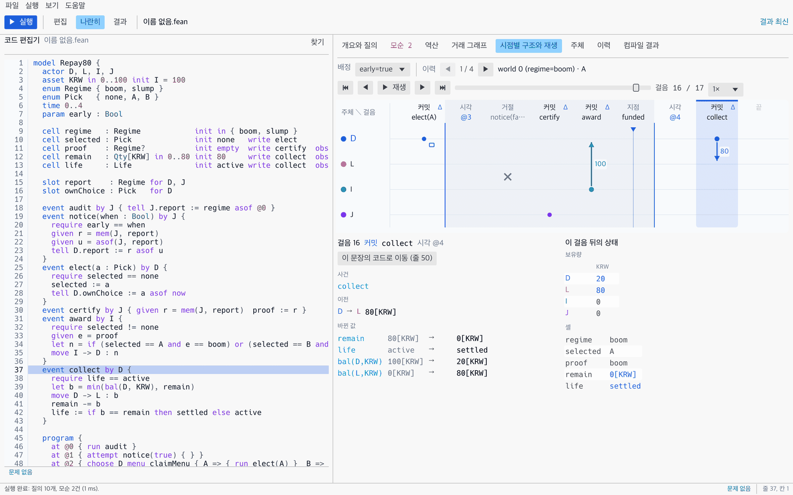
collect를 누른 뒤. 편집기가 37번째 줄 event collect by D {로 갔습니다.| 보기 | 누르는 것 | 가는 줄 |
|---|---|---|
| 개요와 질의 | 질의 이름 | 그 query 선언 |
| 모순 | 코드로 이동 (줄 n) | 컴파일 오류의 줄, 실패한 문장, 깨진 보장의 질의, 해가 없는 역산 질의 |
| 역산 | 역산 질의의 이름 | 그 solve 선언 |
| 미지수의 이름 | 그 unknown 선언 | |
| 지점의 이름 | 그 label 문장 | |
| 시점별 구조와 재생 | 이 문장의 코드로 이동 | 프로그램에서 그 걸음을 만든 문장(run, attempt, at, choose, label, alt) |
| 사건 이름 | 그 event 선언 | |
| 바뀐 값의 이름 | 그 cell 선언. 보유량이면 그 asset 선언 | |
| 주체 | 슬롯 이름 | 그 slot 선언 |
| 지식 표의 셀 이름 | 그 cell 또는 asset 선언 | |
| 편집기 | 문제 목록의 항목 | 그 문제의 줄 |
Loan, Call 등)의 사례에서 온 셀과 사건은 그 instance 선언의 줄로 갑니다. 표준 계약의 절차에서 온 문장은 그 절차를 부른 do 문장의 줄로 갑니다. 표준 계약의 글 자체는 편집기에 없기 때문입니다.IDE와 같은 엔진입니다. 묶음 작업이나 자동화에 씁니다. SOURCE나 PATH가 -이면 표준입력을 읽습니다.
| 명령 | 하는 일 |
|---|---|
fean compile SOURCE [-o OUT] [--no-prelude] | 모델 글을 이미지 파일(.feanc)로 컴파일합니다. -o가 없으면 글 옆에 같은 이름으로 씁니다. |
fean run PATH [--json] [--budget N] [--no-prelude] | 모델 글이나 이미지를 실행해 질의 결과를, 이어서 역산 질의의 결과를 출력합니다. --json이면 JSON으로 냅니다. |
fean dump PATH | 이미지의 목록을 출력합니다(컴파일 결과 보기의 글과 같습니다). |
fean check SOURCE [--no-prelude] | 구문과 규칙만 검사합니다. |
fean inspect PATH [--views] [--budget N] | IDE가 보여 주는 자료 전체(질의와 근거, 모순, 사례와 그 이력, 걸음, 그래프, 원장, 역산 질의의 답과 영역)를 JSON으로 냅니다. --views이면 걸음마다 각 주체의 지식도 넣습니다. |
$ dist/fean run examples/repay80.fean
possible = {early=false: true, early=true: true}
always = {early=false: false, early=true: false}
canD = {true}
...
$ dist/fean compile examples/repay80.fean -o /tmp/repay80.feanc
examples/repay80.fean → /tmp/repay80.feanc (셀 5, 사건 6, 코드 블록 40, 질의 10)
$ dist/fean run examples/capital.fean
repaid = {need: true, enough: true, spare: true, short: false}
left = {need: 0[KRW], enough: 0[KRW], spare: 20[KRW], short: 0[KRW]}
need = 80 at cap=80
enough = {80..200}
spare = cap=100
short = 79 at cap=79| 종료 코드 | 뜻 |
|---|---|
| 0 | 성공 |
| 1 | 컴파일 오류(구문, 규칙, 손상된 이미지). 파일:줄: [규칙] 설명이 표준 오류로 나옵니다. |
| 2 | 실행 중 모델 오류(D-*) |
| 3 | 읽을 수 없는 입력이나 잘못된 사용법 |
--no-prelude는 표준 계약을 앞에 붙이지 않습니다. --budget은 탐색 한도입니다(4.2). Python 엔진 python3 -m fean compile|run|dump|check는 같은 입력에 같은 출력과 같은 이미지 파일을 냅니다. 역산 질의만은 푸는 방법이 다릅니다. Python 엔진은 값을 하나씩 모두 넣어 보므로 후보가 200,000개를 넘으면 UNKNOWN을 내고, 좌표가 여럿인 find의 결과를 조건의 묶음 대신 해의 나열로 적습니다. 그 밖의 결과 글은 같습니다. 이미지 형식은 2이고(언어 0.3), 형식 1의 파일은 다시 컴파일해야 합니다.
| 명령 | 하는 일 |
|---|---|
fean-ide | 예제 Repay80으로 창을 엽니다. |
fean-ide FILE | 그 글을 열고 시작합니다. |
fean-ide --shots DIR | 자동 실행 모드(아래) |
fean-ide --features | 기능 목록 출력. 10장의 표를 JSON으로 냅니다. |
fean-ide --shots DIR은 IDE가 정해진 시나리오를 스스로 수행하고 끝납니다. 창이 실제로 열리고, 사용자가 쓰는 것과 같은 동작(예제 열기, 실행, 보기 바꾸기, 코드로 이동, 고쳐서 다시 실행, 오류 내기, 찾기, 어두운 화면, 역산 보기에서 해와 값을 사례로 열기, 예제 열 개를 여덟 보기에 모두 통과시키기)을 차례로 합니다. 장면마다 화면을 PNG로 저장하고, 관찰한 값(질의 결과, 진단의 규칙과 줄, 이동한 줄, 유지된 선택, 역산 질의의 답과 고른 사례)을 DIR/report.json에 씁니다. 10초쯤 걸립니다.
이 모드는 두 가지에 쓰입니다. IDE의 검산(tests/test_fean_rust.py)이 보고서를 읽어 순환이 실제로 도는지 확인하고, 이 설명서의 그림이 이 모드의 화면입니다. 성공하면 종료 코드 0, 시나리오가 끝까지 가지 못하면 1입니다.
| 증상 | 까닭과 해결 |
|---|---|
| 한글이 네모로 나온다 | IDE는 시스템의 한글 글꼴(macOS의 Apple SD Gothic Neo, 없으면 AppleGothic 또는 Arial Unicode)을 읽어 씁니다. 하나도 없으면 영문과 기호만 제대로 보입니다. 기능은 그대로 동작합니다. |
| 창이 열리지 않는다 | 화면이 없는 환경(원격 셸 등)에서는 창을 열 수 없습니다. fean 명령줄을 쓰십시오. fean inspect가 IDE와 같은 자료를 냅니다. |
질의가 UNKNOWN이다 | 관찰 지점이 탐색 한도를 넘었거나 전략을 찾는 걸음이 한도(2,000,000)를 넘었습니다. 실행 › 탐색 한도를 올리거나, 초기값의 가짓수나 선택의 수를 줄이십시오. |
역산 질의가 UNKNOWN이거나 unknown {…}이 붙는다 | 한도 안에서 가리지 못한 영역이 있습니다(6.7). 탐색 한도를 올리거나, 미지수의 범위를 줄이거나, 두 미지수를 곱하는 식을 피하십시오. 역산 보기의 영역 표에서 어느 영역이 미판정인지 봅니다. |
역산 질의가 none이다 | 제약을 지키면서 목표가 성립하는 값이 없습니다. ‘모순’ 보기의 ‘해 없음’ 항목에서 해가 아닌 값 보기로 왜 안 되는지 봅니다(6.6). |
| 사례 칸이 ‘값이 정해지지 않음’이다 | 미지수가 있는데 역산 질의가 없거나, 어느 역산 질의에서도 해와 해가 아닌 값이 나오지 않았습니다(where를 통과하는 값이 없는 경우 등). 실행할 값이 없으므로 그래프와 재생은 비어 있습니다. 역산 질의를 더하거나 제약을 푸십시오. |
[Q-Solve] | 역산 질의의 꼴이 맞지 않습니다. 목표가 참·거짓이 아니거나, min·max의 식이 수량이 아니거나, 영역 질의나 expect 질의를 목표에 썼거나, at의 지점이 프로그램에 두 번 적혀 있거나, 미지수도 지점도 없이 solve를 쓴 경우입니다. |
| ‘결과 낡음’이 사라지지 않는다 | 지금 글이 컴파일되지 않습니다. 문제 목록의 오류를 고친 뒤 실행하십시오. 실행 전에는 문제 목록이 ‘문제 없음’인지 보면 됩니다. |
[S-Parse]인데 글은 맞아 보인다 | 식이나 블록의 깊이가 2,000을 넘으면 거절합니다. 긴 덧셈은 def로 나누거나 괄호 깊이를 줄이십시오. 문장을 길게 잇는 것은 한도가 없습니다. |
[D-Overflow] | 수량은 64비트 정수입니다. 계산 중에 범위를 넘으면 멈춥니다. |
[S-Lex]가 숫자에서 난다 | 64비트를 넘는 정수 리터럴입니다. |
| 요소를 눌러도 줄로 가지 않는다 | 표준 계약이 쓴 요소 가운데 모델 글에 대응하는 줄이 없는 것입니다(7장). |
| 코드로 이동이 한두 줄 어긋난다 | 결과가 낡았습니다. 다시 실행하십시오(4.3). |
| ← → 나 Space가 듣지 않는다 | 글 칸에 커서가 있습니다. 결과의 빈 곳을 한 번 누르십시오. |
| 배정이 ‘(오류)’다 | 그 매개변수 값에서만 모델이 무효입니다(예: 범위를 벗어난 초기값, 거꾸로 가는 시각). ‘모순’ 보기에 규칙 이름이 있습니다. 다른 배정의 결과는 그대로 볼 수 있습니다. |
| 실행이 오래 걸린다 | 이력의 수는 초기값의 가짓수, alt, choose, free, 매개변수의 곱으로 늘어납니다. 탐색 한도를 낮춰 먼저 규모를 확인하십시오. 예제 열 개는 모두 0.1초 안에 끝납니다. |
| 저장이 안 된다 | 상태 줄에 까닭이 나옵니다(권한, 없는 폴더 등). 다른 이름으로 저장으로 다른 자리에 쓰십시오. |
아래 표는 fean-ide --features가 내는 목록과 같습니다. IDE 안에서는 도움말 › 기능 목록으로 봅니다.
| 묶음 | 기능 | 쓰는 법 |
|---|---|---|
| 편집기 | 새 파일 | 파일 › 새 파일 (⌘N). 작은 본보기 모델로 시작한다. |
| 편집기 | 파일 열기 | 파일 › 열기 (⌘O), 또는 명령줄에서 fean-ide FILE. |
| 편집기 | 저장 | 파일 › 저장 (⌘S). |
| 편집기 | 다른 이름으로 저장 | 파일 › 다른 이름으로 저장 (⇧⌘S). |
| 편집기 | 예제 열기 | 파일 › 예제 열기. 명세의 모델 열 개가 들어 있다. |
| 편집기 | 구문 강조 | 예약어, 수와 시각, 주석, 기호를 색으로 구별한다. |
| 편집기 | 줄 번호 | 편집기 왼쪽의 여백. 오류가 있는 줄에는 표시가 붙는다. |
| 편집기 | 실시간 검사 | 입력을 멈추면 곧 구문과 규칙을 검사해 오류의 규칙 이름과 줄을 보여 준다. |
| 편집기 | 문제 목록 | 편집기 아래. 항목을 누르면 그 줄로 간다. |
| 편집기 | 찾기 | ⌘F. Enter로 다음, ⇧Enter로 이전. |
| 편집기 | 실행 취소와 다시 실행 | ⌘Z, ⇧⌘Z. |
| 실행 | 실행 | 도구 막대의 실행 단추, ⌘R 또는 F5. 컴파일하고 모든 배정을 실행하고 역산 질의를 풀어 결과를 바꾼다. |
| 실행 | 탐색 한도 설정 | 실행 › 탐색 한도. 관찰 지점 수가 한도를 넘으면 미판정(UNKNOWN)이다. |
| 실행 | 낡은 결과 표시 | 글이 바뀌었거나 컴파일에 실패하면 이전 결과에 낡음 표시가 붙는다. |
| 실행 | 선택 유지 | 다시 실행해도 고른 배정, 주체, 이력을 같은 것으로 다시 찾는다. |
| 화면 | 화면 배치 전환 | 편집 · 나란히 · 결과 (⌘1, ⌘2, ⌘3). |
| 화면 | 밝은 화면과 어두운 화면 | 보기 › 어두운 화면. |
| 화면 | 글자 크기 조절 | 보기 › 글자 크게 (⌘+), 글자 작게 (⌘−). |
| 결과 | 사례 선택 | 결과 머리의 사례 고르기. 공개 매개변수의 배정마다, 역산의 해와 해가 아닌 값마다 결과가 따로 있다. |
| 결과 | 개요와 질의 | 모델의 규모와 질의 결과. |
| 결과 | 증인과 반례 보기 | 질의마다 식이 성립하는 이력과 깨지는 이력으로 간다. |
| 결과 | 전략 보기 | can 과 max policy 질의가 찾은 전략을 정보 집합별로 보여 준다. |
| 결과 | 모순 | 컴파일 오류, 실행 오류, 실패한 필수 사건, 깨진 보장, 해가 없는 역산 질의를 모은다. |
| 결과 | 역산 | 미지수와 solve 질의의 결과. 질의마다 답, 모델을 실행한 횟수, 판정이 같은 영역의 표. |
| 결과 | 해와 반례 보기 | 역산 보기의 단추. 해나 해가 아닌 값에서 실행한 모델을 사례로 골라 다른 보기에서 본다. |
| 결과 | 이 값으로 보기 | 역산 보기의 영역마다. 그 영역의 표본 값에서 모델을 실행해 사례로 연다. |
| 결과 | 거래 그래프 | 누가 누구에게 얼마를 보냈는지. 재생 위치까지의 합계. |
| 결과 | 시점별 구조와 재생 | 주체별 줄 위에 걸음을 시간순으로 놓고 한 걸음씩 재생한다. |
| 결과 | 재생 조작 | 처음, 이전, 재생·멈춤, 다음, 끝, 속도, 위치 막대. |
| 결과 | 주체 | 한 주체의 보유량, 받은 통지, 보이는 메뉴. |
| 결과 | 거래 내역 | 주체가 낀 이전과 자산별 잔액. |
| 결과 | 지식 보기 | 주체가 가능하다고 보는 세계와, 아는 값·모르는 값. |
| 결과 | 이력 | 모든 완결 이력의 표. 실패한 이력만 볼 수 있다. |
| 결과 | 이력 나무 | 이력이 갈리는 지점(세계, 가지, 선택)의 나무. |
| 결과 | 컴파일 결과 | 이미지의 규모와 목록. |
| 결과 | 이미지 저장 | 컴파일 결과 보기의 단추. .feanc 파일로 쓴다. |
| 결과 | 코드로 이동 | 결과의 사건, 셀, 질의, 모순, 걸음을 누르면 편집기가 그 줄로 간다. |
| 명령 | 자동 실행 모드 | fean-ide --shots DIR. 시나리오를 수행하며 화면과 보고서를 남긴다. |
| 명령 | 기능 목록 출력 | fean-ide --features. |
| 명령 | 단축키 | 도움말 › 단축키. |
IDE 안에서는 도움말 › 단축키로 봅니다.
| 키 | 하는 일 |
|---|---|
| ⌘R / F5 | 실행 |
| ⌘S | 저장 |
| ⇧⌘S | 다른 이름으로 저장 |
| ⌘O | 열기 |
| ⌘N | 새 파일 |
| ⌘F | 찾기 (Enter 다음, ⇧Enter 이전, Esc 닫기) |
| ⌘1 · ⌘2 · ⌘3 | 화면 배치: 편집 · 나란히 · 결과 |
| ⌘+ · ⌘− | 글자 크게 · 작게 |
| ← · → | 재생 위치를 한 걸음 뒤로 · 앞으로 (편집기 밖에서) |
| Space | 재생 · 멈춤 (편집기 밖에서) |
| ⌘Z · ⇧⌘Z | 실행 취소 · 다시 실행 |
문제 목록과 ‘모순’ 보기의 대괄호 안 이름은 명세의 규칙 이름입니다. 앞 글자가 종류를 알려 줍니다. 규칙마다의 정의는 docs/financial-language.md에 있습니다.
| 머리 | 종류 | 드러나는 때 | 예 |
|---|---|---|---|
S- | 구문 | 쓰는 동안 | S-Lex 언어에 없는 글자, S-Parse 문법에 맞지 않는 글 |
T- | 타입 | 쓰는 동안 | T-Name 모르는 이름, T-Eq 비교할 수 없는 두 값, T-Arith 단위가 다른 덧셈, T-Layer 그 자리에 쓸 수 없는 식 |
E- | 효과 | 쓰는 동안 | E-Set 대입할 수 없는 값, E-Move 수량이 아닌 이전, E-Tell 슬롯에 맞지 않는 통지 |
W- | 구조 | 쓰는 동안, 일부는 실행 때 | W-Writer 쓰기 권한이 없는 사건, W-Write 한 셀을 두 번 씀, W-Debit 남의 보유량을 줄임, W-Menu 한 경로에 같은 메뉴, W-Range 범위 밖의 값, W-Clock 거꾸로 가는 시각 |
P- | 프로그램 | 쓰는 동안 | P-Unit 없는 사건이나 절차, P-Args 맞지 않는 인수, P-Choose 메뉴의 꼴 |
Q- | 질의 | 쓰는 동안 | Q-Bool 참·거짓이 아닌 식, Q-Num 수량이 아닌 식, Q-Point 없는 지점, Q-Region, Q-Prefer, Q-Solve 맞지 않는 역산 질의 |
D- | 실행 | 실행 때 | D-Init 초기 세계가 없거나 불변식을 어김, D-Move 음수 이전, D-Weight 쓸 수 없는 가중치, D-Overflow 64비트를 넘음 |
I- | 이미지 | 이미지를 읽을 때 | I-Format, I-Ref, I-Mode, I-Stack: 손상된 .feanc 파일 |
실패한 필수 사건의 두 가지는 규칙이 아니라 실행의 결과입니다.
| 이름 | 뜻 |
|---|---|
| BLOCKED | 사건의 조건(require, auth, given)이 거짓이거나 낼 재원이 모자랍니다. 상태는 바뀌지 않습니다. attempt면 else 가지로 가고, run이면 실패입니다. |
| NO_SETTLEMENT | 조건과 재원은 통과했지만, 범위·불변식·ensure를 모두 만족하는 사후 상태가 없습니다. attempt여도 실패입니다. |